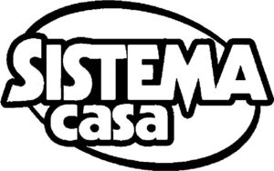

Trade Mark Journal No.2025/025 20 June 2025
WO0000001843376 (1,2,3,4,5,6,7,8,9,11,12,14,16,17,18,19,20,21,22,23,24,25,26,27,28,30,32)
Office of origin: Italy
Date of International Registration:25 October 2024
Date of designation in the UK:
25 October 2024

The trademark consists of an imprint depicting a stylized oval inside which, and partially overlapping thereon, are the wordings SISTEMA CASA in fancy characters arranged on two lines in which the wording SISTEMA is in larger dimensions.
International priority date claimed: 4 June 2024
(Italy)
(302024000090883)
- Class 1
- Distilled water; chemicals for use in industry, science and photography, as well as in agriculture, horticulture and forestry; unprocessed artificial resins, unprocessed plastics; fire extinguishing and fire prevention compositions; tempering and soldering preparations; substances for tanning animal skins and hides; adhesives for use in industry; putties and other paste fillers; compost, manures, fertilizers; biological preparations for use in industry and science.
- Class 2
- Interior paints; solvent free paint; tempera [paints]; enamels for painting; paints, varnishes, lacquers; preservatives against rust and against deterioration of wood; colorants, dyes; inks for printing, marking and engraving; raw natural resins; metals in foil and powder form for use in painting, decorating, printing and art.
- Class 3
- Room scenting sprays; air fragrance reed diffusers; impregnated cleaning, dusting or polishing cloths; scented sachets; non-medicated cosmetics and toiletry preparations; non-medicated dentifrices; perfumery, essential oils; bleaching preparations and other substances for laundry use; cleaning, polishing and abrasive preparations.
- Class 4
- Candles for absorbing smoke; perfumed candles; industrial oils and greases, wax; lubricants; dust absorbing, wetting and binding compositions; fuels and illuminants; candles and wicks for lighting.
- Class 5
- Wipes impregnated with disinfectants tor hygiene purposes; sanitizing wipes; pharmaceuticals, medical and veterinary preparations; sanitary preparations for medical purposes; dietetic food and substances adapted for medical or veterinary use, food for babies; dietary supplements for human beings and animals; plasters, materials for dressings; material for stopping teeth, dental wax; disinfectants; preparations for destroying vermin; fungicides, herbicides.
- Class 6
- Lids of metal; binding screws of metal for cables; cable stretchers and cincture stretchers of metal [clamp links]; brackets of metal tor building; clips of metal; ladders of metal; tins of metal; common metals and their alloys, ores; metal materials for building and construction; transportable buildings of metal; non-electric cables and wires of common metal; small items of metal hardware; metal containers for storage or transport; safes.
- Class 7
- Tin openers, electric; paper shredding machines; pasta making machines, electric; pepper mills, electric; salt mills, electric; sweepers, electric; electric fruit squeezers; date pitting machines, electric; vegetable spiralizers, electric; machine tools, power-operated tools; motors and engines, except for land vehicles; machine coupling and transmission components, except for land vehicles; agricultural implements, other than hand-operated hand tools; incubators for eggs; automatic vending machines.
- Class 8
- Hand-operated implements for slicing food; mandolines for slicing vegetables; slicers, hand-operated; hand-operated fruit slicers; kitchen mandolines; tin openers, non-electric; steak knives; biodegradable knives; biodegradable spoons; biodegradable forks; knives; ceramic knives; scissors; kitchen scissors; shears; cuticle scissors; pocket shears; spatulas [hand tools]; mandolines [kitchen utensils]; fitted cases for table cutlery; fondue forks; spreaders [cutlery]; palette knives; pizza slicers; vegetable knives; box cutters; penknives; vegetable choppers; vegetable slicers, hand-operated; vegetable spiralizers, hand-operated; hand tools and implements, hand-operated; cutlery; side arms, except firearms; razors.
- Class 9
- Magnetic cabinet door catches; scales; kitchen scales; digital spoon scales; electronic weighing scales for kitchen use; carrying cases adapted for computers; laptop computer cases; calculating machines; pocket calculators; electronic calculators; magnifying glasses [optics]; mouse pads; laptop computers; film cutting apparatus; scientific, research, navigation, surveying, photographic, cinematographic, audiovisual, optical, weighing, measuring, signalling, detecting, testing, inspecting, life-saving and teaching apparatus and instruments; apparatus and instruments for conducting, switching, transforming, accumulating, regulating or controlling the distribution or use of electricity; apparatus and instruments for recording, transmitting, reproducing or processing sound, images or data; recorded and downloadable media, computer software, blank digital or analogue recording and storage media; mechanisms for coin-operated apparatus; cash registers, calculating devices; computers and computer peripheral devices; diving suits, divers' masks, ear plugs for divers, nose clips for divers and swimmers, gloves for divers, breathing apparatus for underwater swimming; fire-extinguishing apparatus.
- Class 11
- Stew-pans, electric; electric kettles for household purposes; electric hot water bottles; fitted fabric covers for hot water bottles; electric candles; flameless light-emitting diode [led] candles; air freshener plug-ins; deep fryers, electric; air fryers; roasting apparatus; toilet seats; food steamers, electric; apparatus and installations for lighting, heating, cooling, steam generating, cooking, drying, ventilating, water supply and sanitary purposes.
- Class 12
- Fitted pushchair mosquito nets; vehicles; apparatus for locomotion by land, air or water.
- Class 14
- Automatic watches; digital clocks; clocks and watches, electric; alarm clocks; precious metals and their alloys; jewellery, precious and semi-precious stones; horological and chronometric instruments.
- Class 16
- Ball-point pens; ball-point pen and pencil sets; garbage bags of paper or of plastics; garbage bags of plastic; paper-clips; felt-tip markers; freezer bags; trash can liners [trash or garbage bags]; holders for desk accessories; desktop stationery cabinets; marking pens [stationery]; pencils; color pencils; envelopes [stationery]; bags [envelopes, pouches] of paper or plastics, for merchandise packaging; folders for papers; document covers [stationery]; document markers [highlighting pens]; date books; food wrapping plastic film for household purposes; stationery cases; desktop cabinets for stationery [office requisites]; paper take-out cartons for food; boxes of paper or cardboard; adhesive notepads; baking paper; decorative paper centerpieces; desk baskets for desk accessories; pastes and other adhesives for stationery or household purposes; stickers [decalcomanias]; adhesive foils [stationery]; plastic adhesives for household or domestic use; elastic bands for offices; erasers; pencil sharpeners, electric or non-electric; staplers for paper; paint applicator rollers; paint roller handles; blackboards; writing slates; magnetic boards being office requisites; adhesive tapes for stationery or household purposes; file folders; pens; document laminators for office use; writing or drawing books; spiral notebooks; wirebound books; paper wipes for cleaning; gel roller pens; pens [office requisites]; glitter pens for stationery purposes; glue for stationery or household purposes; fluid ink eradicators; correcting pens; correcting tapes [office requisites]; page holders; general purpose plastic bags; drawing pins; paper sheets [stationery]; drafting compasses; desk sets; desktop organizers; clips for offices; drafting rulers; protractors for use as drawing instruments; pencil sharpeners; electric pencil sharpeners; adhesive tape dispensers [office requisites]; tablecloths of paper; paper and cardboard; printed matter; bookbinding material; photographs; stationery and office requisites, except furniture; adhesives for stationery or household purposes; drawing materials and materials for artists; paintbrushes; instructional and teaching materials; plastic sheets, films and bags for wrapping and packaging; printers' type, printing blocks.
- Class 17
- Plastic film, other than for wrapping; plastic film for use in laminating paper; unprocessed and semi-processed rubber, gutta-percha, gum, asbestos, mica and substitutes for all these materials; plastics and resins in extruded form for use in manufacture; packing, stopping and insulating materials; flexible pipes, tubes and hoses, not of metal.
- Class 18
- Document holders [carrying cases]; vanity cases, not fitted; reusable shopping bags; rucksacks; school backpacks; hiking rucksacks; small rucksacks; leather and imitations of leather; animal skins and hides; luggage and carrying bags; umbrellas and parasols; walking sticks; whips, harness and saddlery; collars, leashes and clothing for animals.
- Class 19
- Spackling compounds; insect screens, not of metal; materials, not of metal, for building and construction; rigid pipes, not of metal, for building; asphalt, pitch, tar and bitumen; transportable buildings, not of metal; monuments, not of metal.
- Class 20
- Plastic trays for packaging of foodstuffs; waste dumpsters, not of metal, other than for medical use; sink liners; bag hangers, not of metal; coat hangers; costume display stands; clothes hooks, not of metal; cupboards; kitchen cabinets; storage cabinets of metal; tool cabinets of metal; bedroom cupboards; chests, not of metal; caskets; general purpose storage containers, not of metal; letterboxes, not of metal or masonry; tool chests, not of metal, empty; kitchen dressers [furniture]; baskets, not of metal; fitted furniture covers of fabric; photograph frames; cushions; accent pillows; mattress cushions; covers for clothing [wardrobe]; clips, not of metal, for cables and pipes; cable clips of plastics; pillows; slanted shelves; picnic benches; screens [furniture]; umbrella stands; shoe racks; shoe cabinets; pouffes [furniture]; bean bag beds; hanging closet organizers; folding chairs; drawer dividers; drawer organizers; cookbook holders; book rests [furniture]; felt pads for furniture legs; stools; furniture, mirrors, picture frames; containers, not of metal, for storage or transport; unworked or semi-worked bone, horn, whalebone or mother-of-pearl; shells; meerschaum; yellow amber.
- Class 21
- Canister sets; household containers; sponges for household purposes; scouring pads for household purposes; cloths for cleaning; dusters; baking cases of silicone; ramekin dishes; dustbins for household purposes; trash containers for household purposes; dustpans; dessert plates; cake stands; cake moulds; bottle openers; bottle openers, non-electric; ironing boards; basins [receptacles]; carver rests; cooking pots and pans, non-electric; food steamers [cookware]; cooking pots for use in microwave ovens; biodegradable beakers [drinking vessels]; compostable cups; drinking glasses; paper cups; beverageware; meat serving tongs; stew-pans; milk pans; drinking bottles for sports; thermally insulated bags for food or beverages; thermally insulated tote bags for food or beverages; plastic water bottles; insulating sleeves for holding bottles; bottles; bottles, sold empty; glass carafes; jugs, not of precious metal; candlesticks of glass; straws for drinking; decanters; baking cases of paper; corkscrews, electric and non-electric; epergnes, not of precious metal; knife rests for the table; baskets for domestic use, not of metal; baskets for household purposes; dustbins for household waste; fruit bowls of glass; serving bowls; sieves for household purposes; biodegradable paper pulp-based plates, bowls and cups; biodegradable bowls; biodegradable cups; cutting boards; knife boards; insulated containers for food or beverages, for household purposes; insulated containers for beverage cans, for household purposes; frying pan lids; insulated lids for plates and dishes; ironing board covers, shaped; dish covers; mixing spoons |kitchen utensils]; aromatic oil diffusers, other than reed diffusers; deep fryers, non-electric; food mixers, non-electric; graters for kitchen use; camping grills [cooking utensils]; oven mitts; salad bowls; buckets; oven dishes; baking dishes; pie pans; pasta makers, hand-operated; broom handles; rolling pins, domestic; brooms; serving ladles; clothes-pegs; mop heads; mop buckets; mugs, not of precious metal; glass mugs; scouring pads; scoops for household purposes; pedal bins; non-electric griddles [cooking utensils]; table plates; serving tongs; sugar tongs; ice tongs; barbecue tongs; meal trays; laundry sorters for household purposes; ice cream scoops; potholders; pomanders [containers]; cleaning sponges; squeegees [cleaning instruments]; brushes for cleaning for household purposes; brushes for cleaning cars; cloth for washing floors; floor brushes; feather-dusters; scouring sponges; nutcrackers; vegetable mashers; wine buckets; bottle buckets; pastry molds; moulds [kitchen utensils]; microfiber cloths for cleaning; sponges; kitchen sponges; cups; storage jars of glass; insulated jars; Mason jars; dishcloths; funnels; cake pans; demitasse sets comprised of cups and saucers; coffee cups; place mats, not of paper or textile; kitchen utensils; cruet sets for oil and vinegar; spice racks; sieves [household utensils]; cake decorating tips and tubes; pot stands [trivets]; skimmers for kitchen use; trivets [table utensils]; brushes; lint brushes; crumb brushes; dishwashing brushes; brushes for cleaning bottles; electric brushes, except parts of machines; blind dusters, non-electric; hand-operated garlic presses [kitchen utensils]; pudding molds; muffin pans; chocolate molds; reusable silicone food covers; clothes drying racks; height adjustable ceiling-mounted drying racks for laundry; wall-mounted drying racks for laundry; clothes drying hangers; toothpicks; brush holders for toilets [water-closets]; teapots; spice grinders, hand-operated; food grinders, hand-operated; food steamers, non-electric; pots; jars; woks; household or kitchen utensils and containers; cookware and tableware, except forks, knives and spoons; combs and sponges; brushes, except paintbrushes; brush-making materials; articles for cleaning purposes; unworked or semi-worked glass, except building glass; glassware, porcelain and earthenware.
- Class 22
- Multi-purpose cloth bags; silage bags; protection pouches made of fabric for storing purses when not in use; textile bags for merchandise packaging; laundry wash bags; ropes and string; nets; tents and tarpaulins; awnings of textile or synthetic materials; sails; sacks for the transport and storage of materials in bulk; padding, cushioning and stuffing materials, except of paper, cardboard, rubber or plastics; raw fibrous textile materials and substitutes therefor.
- Class 23
- Sewing thread and yarn; yarns and threads for textile use.
- Class 24
- Drugget; towels of textile; throws; tablemats of textile; lace table mats, not made of paper; cloth doilies; bedsheets; bed and table linen; bed blankets; comforters [bedding]; pillowcases; covers [loose] for furniture; linings [textile]; covers for quilts and duvets; unfitted fabric furniture covers; covers for cushions; bean bag covers; tablecloths of textile; table runners, not of paper; hand towels of textile; kitchen towels of textile; dish towels for drying; place mats of textile; rubberized cloths; oilcloth for use as tablecloths; bed covers; quilt covers; mosquito nets; textiles and substitutes for textiles; household linen; curtains of textile or plastic.
- Class 25
- Bath robes; hooded bath robes; slippers; leather slippers; slipper socks; dressing gowns; fleece vests; quilted vests; aprons [clothing]; gloves [clothing]; pyjamas; dusters [clothing]; clothing, footwear, headwear.
- Class 26
- Sewing baskets; sewing boxes; elastic ribbons; clasps for clothing; hair curl clips; sewing kits; borders and edgings for clothing; lace, braid and embroidery, and haberdashery ribbons and bows; buttons, hooks and eyes, pins and needles; artificial flowers; hair decorations; false hair.
- Class 27
- Rubber mats; borders being wall decorations in the nature of wall coverings; carpets; shower mats; floor mats of textile for use in the home; runners [mats]; mats; carpets, rugs, mats and matting, linoleum and other materials for covering existing floors; wall hangings, not of textile.
- Class 28
- Bean bag animals; games, toys and playthings; video game apparatus; gymnastic and sporting articles; decorations for Christmas trees.
- Class 30
- Crystallized sugar for decorating food; mate [tea]; coffee, tea, cocoa and substitutes therefor; rice, pasta and noodles; tapioca and sago; flour and preparations made from cereals; bread, pastries and confectionery; chocolate; ice cream, sorbets and other edible ices; sugar, honey, treacle; yeast, baking-powder; salt, seasonings, spices, preserved herbs; vinegar, sauces and other condiments; ice [frozen water].
- Class 32
- Distilled drinking water; beers; non-alcoholic beverages; mineral and aerated waters; fruit beverages and fruit juices; syrups and other preparations for making non-alcoholic beverages.
EUROSPIN ITALIA S.P.A.
Representative: Dr. Modiano & Associati SpA, Via Meravigli, 16, I-20123 Milano, ITALY